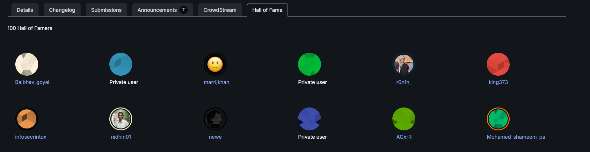
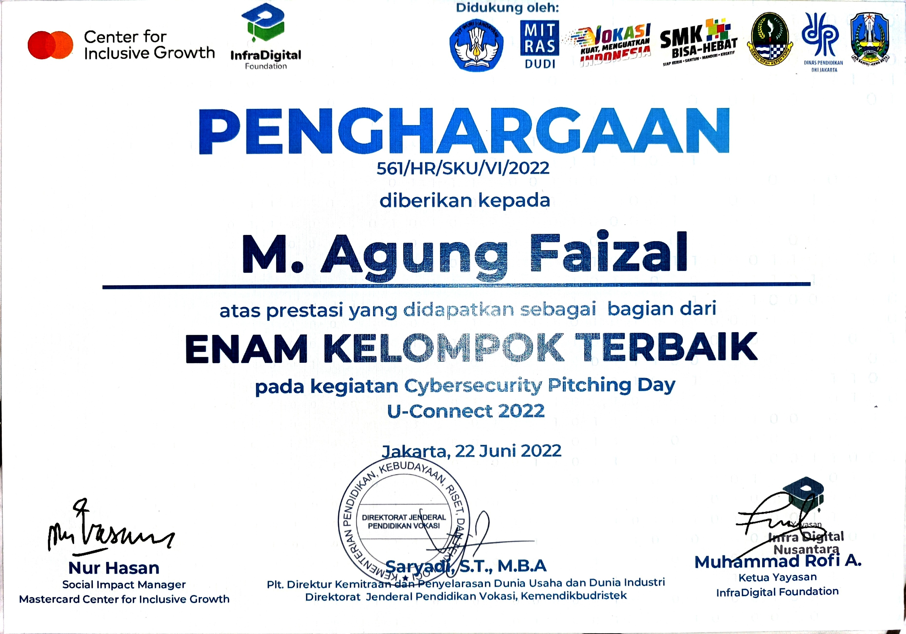
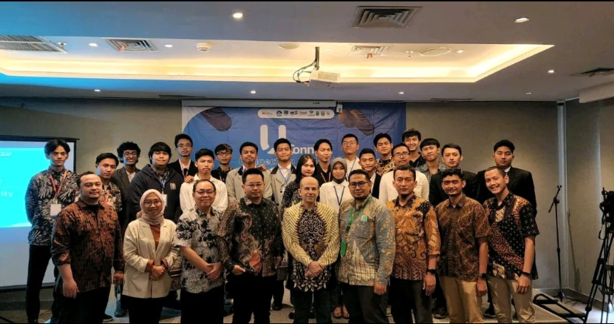
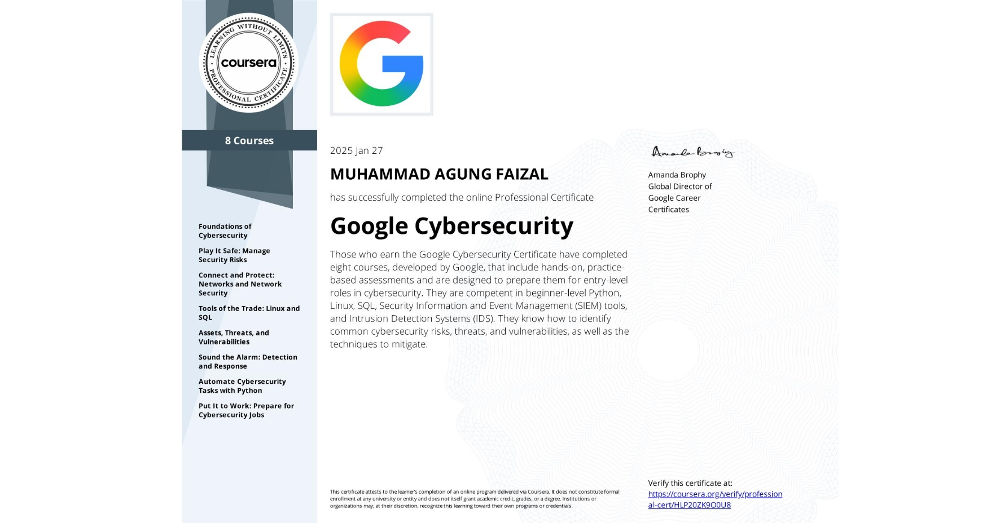
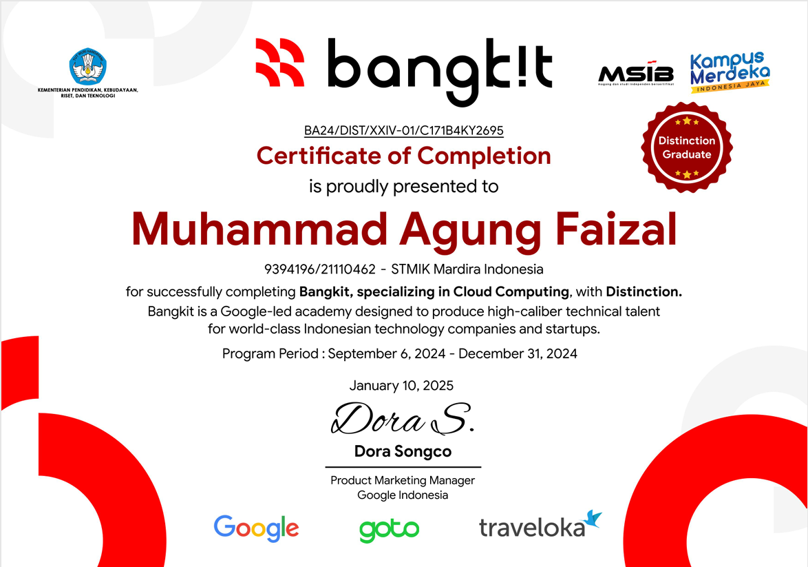
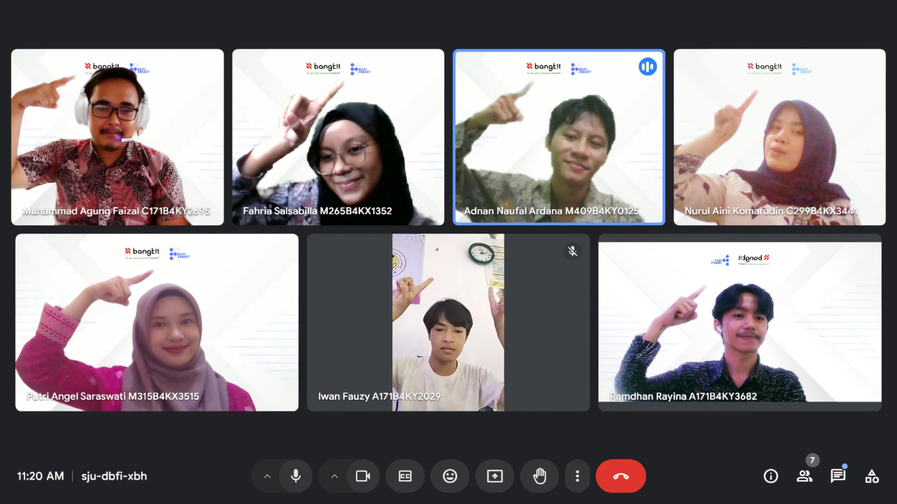
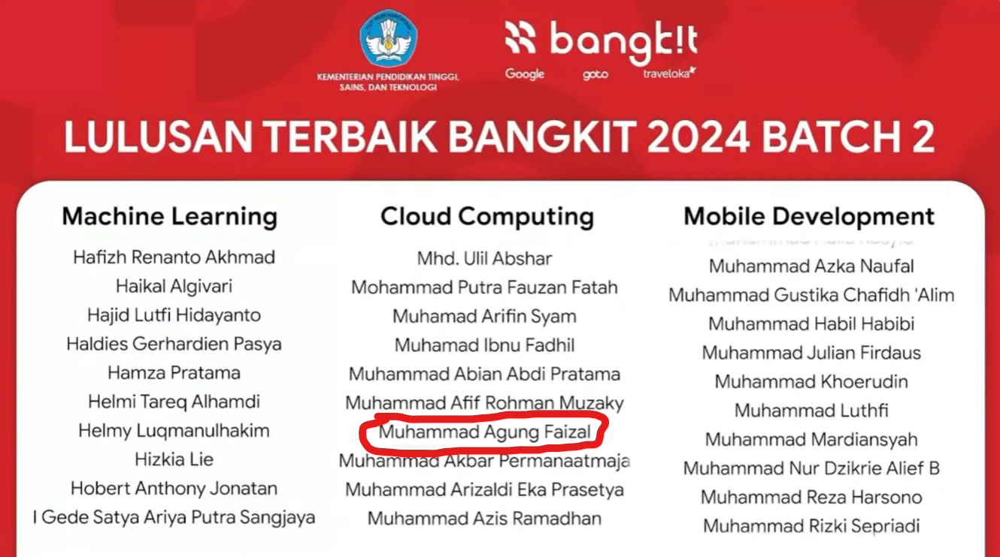

Experience & Achievements
NASA VDP Hall of Fame
Independent Security ResearcherDiakui dalam Vulnerability Disclosure Policy (VDP) NASA karena berhasil mengidentifikasi dan melaporkan celah keamanan secara etis dan bertanggung jawab.


Red-Team Cyber Security Lab Creator
U-Connect JakartaMeraih penghargaan sebagai salah satu Tim Terbaik (Top 1 out of 6) dalam merancang dan membangun simulasi Red-Team Cyber Security Lab.


Google Cybersecurity Professional Certificate
Google via Coursera • 27 Jan 2025Menyelesaikan program profesional 8 kursus dari Google yang mencakup pengelolaan risiko keamanan, proteksi jaringan, automasi tugas keamanan dengan Python, Linux, SQL, SIEM tools, serta Intrusion Detection Systems (IDS).
Verify Credential (Coursera) →

Cloud Computing Cohort - Distinction Graduate
Bangkit Academy 2024Lulusan terbaik (Distinction). Mengkonfigurasi dan mendeploy infrastruktur backend menggunakan GCP untuk proyek Capstone Machine Learning berbasis Android.



Projects & Security Research
BudgetinYuk App
Google Dev Community - JuaraVibeCoding
Mengembangkan aplikasi manajemen keuangan komprehensif untuk melacak dan mengatur keuangan personal, keluarga, dan UMKM secara efisien.
View Details →NASA VDP: Sensitive Data Exposure via IDOR
Valid Vulnerability Report
Memanfaatkan teknik Google Dorking tingkat lanjut untuk menemukan tautan cloud drive publik yang terekspos. Mengidentifikasi kerentanan IDOR kritis yang memungkinkan akses, modifikasi, dan penghapusan data sensitif (PII). Temuan divalidasi oleh tim keamanan NASA.
View Details →DownunderCTF V | TCP1P Team
Top 250 out of 2144 Global Teams
Berkompetisi di tingkat global bersama tim TCP1P. Berkontribusi sebagai spesialis pemecahan masalah kompleks pada kategori Cryptography dan eksploitasi Web Vulnerabilities.
View Details →Regional CTF Qualifier | Anon Cyber Team
Jawa Barat Representative
Mewakili regional Jawa Barat dalam kompetisi Capture The Flag. Memecahkan berbagai tantangan keamanan siber di tingkat regional.
View Details →Meta4Sec CTF Qualifier (Solo Player)
Top 50 out of 125 Teams
Berkompetisi secara individu melawan tim-tim lain dan berhasil masuk dalam daftar Top 50. Berhasil memecahkan tantangan di berbagai kategori: Web Vulnerabilities, Cryptography, Reverse Engineering, Steganography, dan Misc.
View Details →RupiSmart - Accessibility App
Bangkit Academy Capstone | Cloud & Backend
Aplikasi pendeteksi nilai mata uang Rupiah untuk penyandang tunanetra memanfaatkan fitur aksesibilitas smartphone. Bertanggung jawab penuh dalam arsitektur backend dan infrastruktur pada Google Cloud Platform (GCP), berkolaborasi lintas divisi (ML & Mobile Dev).
View Details →Get In Touch
Saat ini saya terbuka untuk peluang baru di bidang Cybersecurity, Penetration Testing, dan Cloud Engineering. Jangan ragu untuk menghubungi saya melalui Email atau terhubung di LinkedIn!